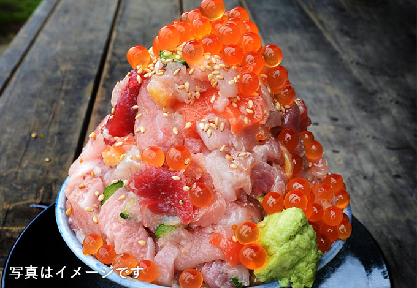
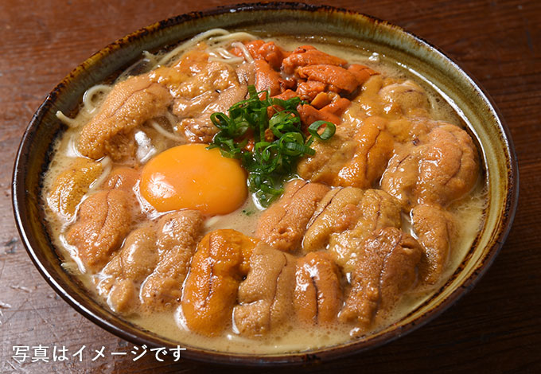

小田原漁港の台所
神奈川県西部最大の魚市場である小田原漁港は地元の魚のほか全国各地から水産品が集まります。なんといっても四季折々の豊富な魚種が自慢
とと丸食堂では豊富な魚種があるからことできる豊富なメニューをご用意させていただきます。思わずびっくりするほどの山盛り海鮮丼厚切りが嬉しいお刺身定食。
たっぷりの魚介で出汁が香るラーメンここは「小田原漁港の台所」とと丸食堂です
TOTOKO小田原
小田原が抱く、自然豊かな漁場を表現し、魚（とと）の宝庫から「ととこ」と名付けました。そんな小田原の豊かさを表現するような施設であってほしい。
「ととこ」という「呼びやすさ」により、子どもからお年寄りまで親しみをもっていただく施設になるようにと思いが込められています。
漁港の町でめぐりあい、人を育て、暮らしを豊かにする。だからこそ地元の皆様と共に愛し、共に発信し続け、日本全国からたくさんの方々が来ていただける施設にしていきます。
また、小田原の誇る新鮮な魚や干物、蒲鉾などの水産加工品だけでなく、日本中のおいしい食文化を海外の方に広く知っていただく品も揃えました。
漁港の駅に来てくださった方々に最高の笑顔を提供していきます
